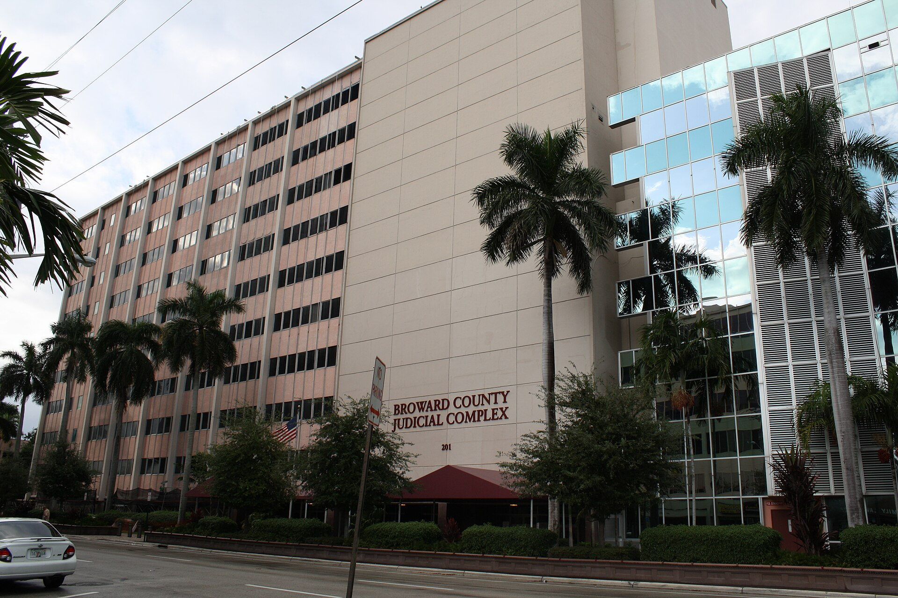
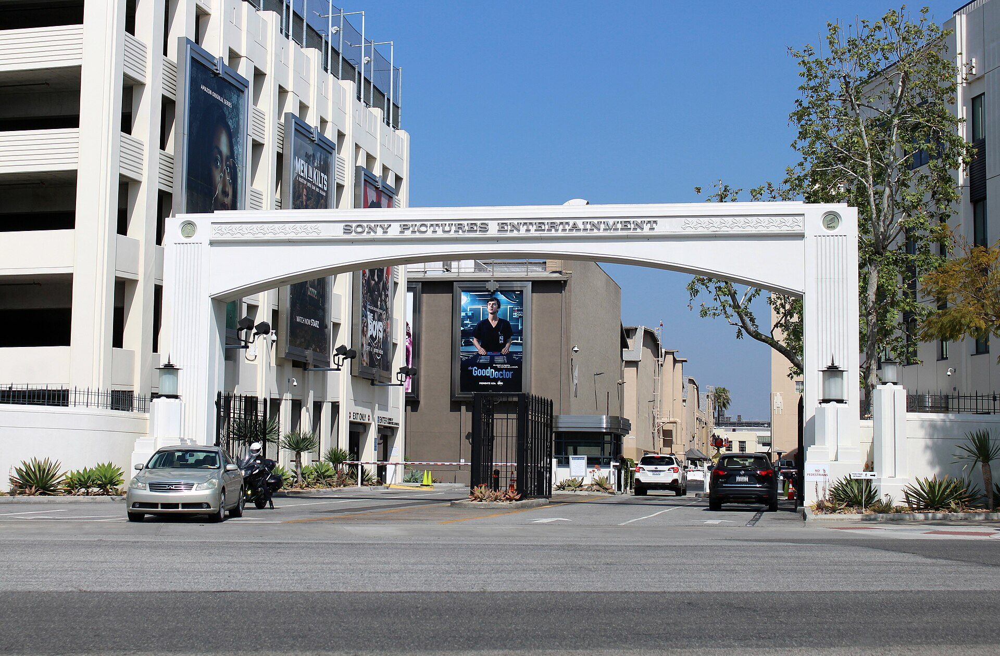

Vol. I · No. 77 · Tuesday, August 4, 2026 · 17 items · ~17 min read
A bulker burns inside the Strait of Hormuz while Washington and Tehran cannot agree that talks exist.
The World · Strait of Hormuz · cross-spectrum LLCLRR
A bulk carrier burns inside the Strait of Hormuz while Washington and Tehran disagree that talks exist
The Strait of Hormuz and Oman's Musandam Peninsula from orbit. The vessel struck Monday night was 20 nautical miles northeast of Al Khasab, inside the strait. — NASA MODIS via Wikimedia Commons
UK Maritime Trade OperationsInstitutionThe Royal Navy cell in Dubai that runs merchant-shipping alerts across the Gulf. Its notices are the de facto first public record of any attack on commercial shipping in the region. logged the alert at 22:00 UTC Monday: a cargo ship broadcasting on VHF 16 that it had been hit by an unknown projectile, 20 nautical miles northeast of Al KhasabPlaceOmani port town on the Musandam Peninsula, the exclave forming the southern jaw of the strait and separated from the rest of Oman by UAE territory. Transiting ships pass within a few miles., Oman, well inside the strait. The vessel was identified as the Minoan Pioneer, a Liberia-flagged, Greek-owned bulk carrier of 93,283 deadweight tonnes built in 2011 and managed by Modion Maritime Management, though the ownership chain is thinly sourced and UKMTO itself did not name the ship. The projectile struck the engine room, blacking out the vessel and setting a fire in the accommodation block. One crew member, the third engineer, is missing. No party has claimed responsibility, and UKMTO made no attribution.
"A cargo vessel has broadcasted on VHF 16 that they have been hit by an unknown projectile."
— UK Maritime Trade Operations alert, August 3
The strike landed in the middle of a day in which the two governments supposedly negotiating could not agree that negotiations were happening. Trump, in the Oval Office on Monday, said talks were "going on right now," at the request of Iran, Saudi Arabia, the UAE and Qatar, described the round as Tehran's "last chance," called a deal imminent in two phases, reopening the strait and then total denuclearization, and called the Iranian leadership "unbelievably duplicitous." Iran's foreign ministry said the same day that there are no negotiations with the United States at present, and that Tehran is talking to Oman instead. Foreign Minister Abbas AraghchiPersonIran's foreign minister and its lead nuclear negotiator, a veteran of the 2015 JCPOA talks. He is the official channel through which Tehran has routed the Omani mediation. said the Tehran-Muscat channel was in its final stages.
The gap underneath the noise is substantive rather than atmospheric. Washington wants the strait permanently and unconditionally open; Tehran wants sovereign management of it, and the Washington Times alone reports that Iran wants transiting vessels to deal directly with Iranian authorities and pay transit fees, a claim no other outlet corroborated. That is not a scheduling dispute, it is a fight over whether transit passageConceptThe UNCLOS regime for straits used for international navigation, under which a coastal state may not suspend passage. Iran signed but never ratified UNCLOS, the seam its sovereign-management claim works. survives as a legal norm. Markets read the optimism and not the denial: Brent fell roughly 4.6 percent to just over $83 a barrel after Araghchi's remark, and that move carried the American equity session to a record Dow close. Sunday's pattern argues for the pessimists. Two tankers, the VLCC Egypt Prosperity and the Aframax On Pride, escaped separate incidents in Omani territorial waters on August 2.
AI · Washington
The White House finishes its frontier-model hacking test and will not say what is in it
A White House official confirmed Monday that the administration met its deadline to complete the voluntary framework for evaluating advanced AI models, the one mandated by the June 2 executive order on advanced artificial intelligence innovation and security. What the framework says, who has seen it, and when companies start using it are all being withheld. "Just because things are unclassified that doesn't mean we are going to broadcast them to everyone," the official told Axios. Senior representatives of OpenAI, AnthropicInstitutionAI lab whose most capable model, Mythos, was never released publicly over its vulnerability-discovery ability. Its public derivative, Fable, was later placed under US export controls., Google and Meta sit down behind closed doors today at the Office of the National Cyber DirectorInstitutionExecutive Office of the President unit created to coordinate federal cybersecurity policy. Here it is the drafter and venue for AI pre-release cyber testing, not DHS or Commerce., led by National Cyber Director Sean CairncrossPersonUS National Cyber Director. Reuters reporting places Treasury Secretary Scott Bessent and Commerce Secretary Howard Lutnick alongside him at the head of the frontier-model initiative..
The order itself does not classify the framework, only the benchmarking process and the capability thresholds that decide which models are covered, which is why policymakers expected publication and did not get it. The mechanics matter more than the secrecy: the framework is meant to set the confidentiality, insider-risk and nondisclosure terms that apply when the government takes possession of a model for up to 30 days before public release, and to name which "trusted partners" get that early access. Anthropic, OpenAI and Google gave feedback on a draft. The leverage is not statutory. Anthropic's most capable model was withheld from release over its ability to find software vulnerabilities, its public derivative drew export controls, and the White House told OpenAI to stagger the release of GPT-5.6, which the administration denies amounted to a green light.
Corporate · Denver
Palantir clears a billion dollars of quarterly profit, and its chief executive calls the AI labs Marxist
Palantir reported second-quarter revenue of $1.935 billion after Monday's close, up 93 percent year over year against consensus of $1.81 billion, and shares rose more than 12 percent in late trading. GAAP net income attributable to common stockholders was $1.062 billion, more than triple a year ago, a 55 percent net margin. United States revenue grew 115 percent to $1.573 billion, split between $764 million of commercial work, up 149 percent, and $809 million of government. The company closed 220 contracts worth $1 million or more, total contract value rose 49 percent to $3.373 billion, and US commercial remaining deal valueConceptContracted revenue signed but not yet recognized, a measure of forward visibility. Palantir's US commercial figure reached $6.238 billion, up 124 percent year over year. reached $6.238 billion, up 124 percent. Guidance rose for a third straight quarter, to $8.150 billion to $8.158 billion for the year. The Rule of 40ConceptSoftware-investor shorthand: revenue growth plus operating margin should clear 40. Palantir's 155 is the number bulls cite against the valuation critique. score was 155. The stock had fallen roughly 40 percent from its late-2025 peak going in, with options pricing a 12 percent move either way.
The quarterly shareholder letter is what will get quoted. Alex KarpPersonCo-founder and chief executive of Palantir, who holds a doctorate in social theory and routinely argues enterprise software strategy in Continental-philosophy terms., who holds a doctorate in social theory, wrote that "there are Marxist overtones and undertones to our business" and that others, "including many of those building large language models, intend, knowingly or otherwise, to capture the means of productionConceptMarx's term for the tools, plant and knowledge with which goods are made. Karp's claim is that feeding proprietary know-how into a lab's model transfers productive capacity itself, not merely data. of their purported partners." On the call he sharpened it: an enterprise paying for tokens is "paying for the right for them to migrate your IP, your know-how, your expertise to their model, so that they can build a competitive business that doesn't require your business or people." The underlying claim is not eccentric. Satya Nadella has spent the summer telling customers the same thing in duller language.
Corporate · Bedford, Mass.
Curium buys Lantheus for up to $8 billion, with $12 a share of it hanging on a six-rung sales ladder
Curium US Holdings agreed Monday to acquire Lantheus Holdings for $102.50 a share in cash at closing plus a non-transferable contingent value rightConceptA non-tradable promise of additional cash if defined post-closing milestones are hit. It bridges a valuation gap by making the seller, not the buyer, carry the forecast risk. worth up to $12.00, taking headline consideration to $114.50 and aggregate value to roughly $8.0 billion. The premiums are quoted to May 21, 2026, the unaffected dateConceptThe last trading day before a leak or media report moved the stock. Quoting premiums to it rather than to the pre-announcement close is a tell that the process leaked. before the first media report of a sale process: 38 percent to the 60-day volume-weighted average, 29 percent to the 30-day, 21 percent to the close. The CVR is a six-rung ladder measured on aggregate adjusted sales, five rungs in prostate cancer diagnostics running from $950 million to $1.75 billion in fiscal 2030, two in neurology achievable in any of 2028 through 2030, and one on DEFINITY.
The fee architecture is the part worth reading twice. Lantheus owes $228 million if it walks; Curium owes a $385 million general reverse termination feeConceptA buyer-side break fee. Splitting it into a large general tier and a smaller regulatory tier prices antitrust failure separately, and far more cheaply, than a buyer's change of heart. but only $100 million if the deal dies on regulatory grounds, which caps antitrust risk at roughly a quarter of the general fee. There is no go-shop and no financing condition. The outside date is May 2, 2027, extendable to a November 30, 2027 backstop, with closing expected in the first half of 2027. Morgan Stanley led for Lantheus with BofA Securities and Solomon Partners, advised by Covington & Burling and Ropes & Gray; Jefferies led for Curium with J.P. Morgan and PJT Partners, advised by Kirkland & Ellis and Arnold & Porter. CapVestInstitutionThe private equity owner of Curium, which recapitalized the radiopharmaceutical business at roughly $7 billion last year before turning around to buy its largest listed rival. controls Curium and recapitalized it at about $7 billion last year. A $6.0 million transaction bonus pool includes $4.0 million for Mary Anne Heino.
Artificial Intelligence
The branch writing the rules is buying its drafting tools from the party being regulated.
AI · Capitol Hill
The House spends nearly nine of every ten identifiable AI dollars at OpenAI
House disbursement records name AI vendors; Senate reports do not, which is why the only line-item view of congressional AI spending stops at one chamber. — Wikimedia Commons
CNBC's analysis of House disbursement recordsInstitutionThe quarterly public ledger of every payment made by House member offices, committees and institutional accounts. It names vendors where the Senate's equivalent does not. for the twelve months ending March 31 found $113,740 of spending on named AI vendors. ChatGPT took $100,580 of it across 798 transactions, roughly 88 percent of the dollars and 96 percent of the transaction count. Anthropic's Claude was a distant second at $13,160 across 37 transactions. The partisan split cuts against expectation: Democratic member offices accounted for $54,165 and Republican offices $15,782, more than three to one, from the caucus that talks most about AI oversight. The methodology is narrow by construction, excluding the Senate, free accounts, and AI bundled into broader software contracts, so real usage is materially higher.
The lead is an incumbency artifact. The House Digital ServiceInstitutionThe chamber's internal technology unit. It formed an AI working group in 2023 and handed out the first 40 ChatGPT Plus licenses to staff in both parties. stood up an AI working group in 2023 and distributed 40 ChatGPT Plus licenses to staffers in both parties, and OpenAI partnered with the nonpartisan Congressional Management Foundation to train senior aides. Staff now use it to summarize legislation, draft memos and prepare hearing materials; Representative Julie Fedorchak of North Dakota had her office build a searchable database of the bills she has worked on. The money moving the other way is larger. Per the watchdog Issue One, OpenAI's federal lobbying rose 82.5 percent year over year to $1 million in the first quarter, and Anthropic spent nearly $1.6 million. Representatives Ted Lieu and Nathaniel Moran have meanwhile introduced the AI Kill Switch ActConceptBipartisan bill requiring major labs to retain the ability to throttle or shut down their most powerful systems, with emergency authority vested in the Homeland Security Secretary..
AI · Menlo Park
Sequoia leads a billion dollars into a reactor company whose proof point is one Nvidia rack
Valar Atomics raised $1 billion in equity on Monday, led by Sequoia Capital, with partner Shaun MaguirePersonSequoia Capital partner known for deep-tech and defense investments. He led this round and took a board seat, which is the governance signal under the headline number. taking a board seat. Bloomberg puts the valuation at $6 billion, roughly triple the $2 billion the company carried months earlier; Valar did not disclose it. The structurally interesting piece is the debt beside the equity: a $200 million line of credit from Erebor and other banks, extended to a company with no revenue and a product that does not yet have a commercial installation. The syndicate also includes Point72 Ventures, Valor Equity Partners, Atreides Management, Conviction, Riot Ventures and others.
The proof point is thin and the company does not hide it. In June, Valar's Ward 250ConceptValar's reactor design, which the company says went critical seven months after its earlier NOVA core and, in June 2026, powered an Nvidia Blackwell system. reactor powered an Nvidia Blackwell system, and the two announced a waterless 30-megawatt "AI factoryConceptNvidia's term for a datacenter whose entire output is AI computation. Pairing one with a dedicated reactor ties compute capacity to generation rather than to the public grid.," with the first commercial application reportedly planned for Utah. Founder Isaiah Taylor frames progress as a shrinking cadence: "It took two years to complete the NOVA core. It took seven months to take Ward 250 critical." Proceeds go to manufacturing fleets of small modular reactorsConceptReactors built in a factory and shipped as units rather than constructed on site. The pitch is that repetition drives cost down, which is why Valar measures itself in build time per reactor.. Antares raised $470 million a week earlier for military reactors, and X-energy raised $1 billion through a datacenter-driven IPO in April.
Markets & Deals
An unusually heavy deal Monday: two take-privates, $3.2 billion of converts, and a record Dow close on an Iranian rumor.
Corporate · Plano, Texas
KKR takes Integer private at a 51.8 percent premium, with five banks on the debt and no financing out
Integer Holdings will delist from the New York Stock Exchange on closing, expected by the end of 2026. — Wikimedia Commons
KKR agreed Monday to acquire Integer Holdings for $127.00 a share in cash, an enterprise value of roughly $5.7 billion, through Armstrong Parent and Armstrong Bidco. The premium is 51.8 percent to the April 29 close, the day before Integer announced a strategic reviewConceptA public signal that a company may sell itself. It lifts the stock immediately, which is why buyers quote premiums to the pre-review price rather than to the day before signing., and 28.8 percent to the 30-day volume-weighted average through July 31. KKR is investing through its core private equityConceptA ten-to-fifteen-year hold strategy with lower target returns than traditional buyout funds, which changes both the leverage a sponsor will carry and the exit it underwrites. strategy, the long-hold vehicle, and the debt is committed with no financing contingencyConceptThe condition, now largely extinct in large-cap deals, that let a buyer walk if its debt fell through. Sellers priced it out; buyers now pay a reverse fee instead.. Citi, KKR Capital Markets, Barclays, UBS and Jefferies are lead arrangers.
Goldman Sachs advised Integer exclusively; Centerview, Barclays, Citi and Raymond James advised KKR, which puts Barclays and Citi on both the advisory and the financing side of the same transaction. Davis Polk & Wardwell acted for Integer, Kirkland & Ellis for KKR. Closing is expected by the end of 2026, Integer delists from the New York Stock Exchange, guidance has been withdrawn and Wednesday's earnings call is cancelled. KKR plans broad-based employee ownership across roughly 11,000 associates, the Pete Stavros signature. What is not public is everything a practitioner would want: the termination fees, any go-shop, and the outside date are absent from the Item 7.01 furnishing, so no number should be quoted for them yet. Chief executive Payman Khales called KKR "the right strategic partner to bring our business into its next chapter."
Corporate · Atlanta and Carpinteria
Southern and Procore price $3.2 billion of convertibles in one session, one at a 12.5 percent premium and one at 50
Southern Company priced $2.375 billion of Rule 144AConceptThe resale safe harbor for sales to qualified institutional buyers. It is why a convertible can be launched after the close and priced before the next open, with no registration statement. convertibles on Monday in two tranches, $725 million of 2.125 percent notes due December 2027 struck at roughly a 12.5 percent conversion premium and $1.65 billion of 3.50 percent notes due September 2029 at roughly 27.5 percent, both upsized from $650 million and $1.5 billion. GreenshoesConceptAn over-allotment option, here thirteen days, letting underwriters buy additional notes to stabilize the aftermarket. Its size relative to the base deal is a standard read on demand. of $108.75 million and $247.5 million run thirteen days. About $403 million of the proceeds repurchases roughly $369 million of the 4.50 percent 2024A converts due June 2027 through an initial purchaser affiliate, and the release expressly flags that convertible arbitrageConceptBuying the bond and shorting the stock to isolate the option. Unwinding an old position means buying stock back, which is why a repurchase can push both the share price and the new conversion price higher. unwinds may push the stock and the conversion prices higher.
Procore Technologies priced $825 million of zero-coupon converts due August 2031 the same evening, upsized from $750 million, at a conversion price near $82.89, a 50.0 percent premium to Monday's $55.26 close, with a capped callConceptA derivative bought alongside a convertible to offset dilution up to a ceiling. It raises the effective premium the issuer bears without paying a higher coupon. struck at $110.52, a full 100 percent premium. There is no issuer redemption before August 2029 and a $125 million purchaser option. Both deals settle Thursday. Neither issuer disclosed bookrunners, which is worth noting because the identity of the banks is the one thing a convertible print usually gives away for free.
Corporate · New York
Oil falls six percent, the Dow closes at a record, and Treasury quietly adds $68 billion to its borrowing need
The Dow closed at a record 53,178.41, up 693.38 points or 1.32 percent, on the news that the White House had called off a planned strike on Iran to chase a Hormuz deal. The S&P 500 rose 1.48 percent to 7,600.50, just under its record, and the Nasdaq Composite gained 2.13 percent to 25,913.90; the Russell 2000 added 1.7 percent and the VIX closed at 15.75. West Texas Intermediate fell 6.0 percent to $79.60 and Brent 4.8 percent to $83.70. Gold settled at $4,038.16. The bond market did not join the party. Two-year yields ended at 4.241 percent, tens at 4.676 percent, and the long bond at 5.226 percent, roughly two basis points off the nineteen-year high it set on July 29, despite a six percent collapse in crude.
The reason for the stubbornness arrived at three o'clock. Treasury raised its third-quarter marketable borrowing estimate to $739 billion, $68 billion above the May figure, with auction sizes due at Wednesday's quarterly refundingConceptTreasury's periodic statement of how much it will borrow and at what maturities. It moves the long end more reliably than most macro data because it is supply, not sentiment.. The data cut the same way: ISM manufacturingInstitutionThe Institute for Supply Management's monthly diffusion index. Above 50 signals expansion; July's 55.6 was the strongest reading since May 2022, and its employment sub-index expanded for the first time in 33 months. printed 55.6 for July against 53.3, the best since May 2022, with the employment sub-index at 52.8 after 33 straight months of contraction. The Fed held at 3.50 to 3.75 percent last week on a 9-3 vote in which all three dissents were for a hike, the first test of Kevin WarshPersonChair of the Federal Reserve. Three of his regional bank presidents, Hammack, Kashkari and Logan, dissented in favor of an immediate hike and then argued the case publicly.'s ability to hold a committee together, and futures put September odds near 60 percent. Neel Kashkari said on Friday it was "better to carry out a series of small rate hikes than to wait."
Corporate · South Florida · Miami
Brightline Florida buys another seven days as $5.5 billion of debt runs at a Friday deadline
Bondholders granted Brightline Florida a seven-day grace period on Friday, disclosed through an EMMAInstitutionThe MSRB's Electronic Municipal Market Access repository, where municipal issuers must file continuing disclosure. Bad news in the muni market appears there first, by law, before it appears anywhere else. notice, pushing an interest payment originally due July 15 to August 7. Holders of the $1.2 billion of unrated tax-exempt bonds and the $985 million of commuter bonds signed the sixth and fifteenth supplements respectively, which is the tell: this is not a one-off accommodation but a restructuring being negotiated a week at a time in public. A mandatory redemption on the commuter bonds now falls on Thursday, and interest originally due February 15, nearly six months late, on Friday.
Friday is the deadline to pay, renegotiate or restructure $5.5 billion of debt for the Miami-headquartered operator of the Miami to Orlando line. This is the largest unrated tax-exempt private activity bondConceptTax-exempt conduit debt issued through a public authority for a private project. The credit risk sits entirely on the operator, not the issuer, which is why an unrated deal of this size is a market event. story in the market, and the repeated forbearanceConceptAn agreement by lenders not to exercise remedies for a defined period. Serial extensions usually mean the collateral is worth less than the debt and both sides prefer negotiation to foreclosure. is the more informative fact than any single missed payment. The report is Caitlin Devitt's in the Bond Buyer, published Monday afternoon and single-sourced against the EMMA filing; no other outlet carried it in the window.
Law & the Courts
A capital markets team's deal papers go to a Fort Lauderdale jury, and the students win a vote in Chicago.
Law · South Florida · Fort Lauderdale
A Broward jury is hearing whether Simpson Thacher's deal papers sank its own client

The Broward County Courthouse in Fort Lauderdale, where the Patriot National malpractice trial entered the defense case on Monday. — Wikimedia Commons
A former Simpson Thacher & Bartlett capital markets attorney testified Monday that the firm did all it could to help Patriot National and its founder and to warn them about the risks of the financing they were pursuing. Law360 put the operative adjective in its headline: the firm's PIPEConceptA private investment in public equity, in which a listed company sells shares at a discount directly to private investors. Fast and cheap, but the discount and any resale freedom can crater the public price. work was "dogged." The case is Mariano and Patriot National v. Simpson Thacher & Bartlett and Kasowitz Benson Torres, tried since mid-July in Florida's Seventeenth Judicial CircuitPlaceFlorida's state trial court for Broward County, seated in Fort Lauderdale. It is the default venue for South Florida commercial disputes that are not removed to the Southern District. in Broward County, and it is the rare legal malpractice claim against an elite corporate firm that neither settled nor died on summary judgment.
Patriot National was a Fort Lauderdale insurance services company that went public in 2015 and raised more than $140 million. Its largest customer, Guarantee Insurance, was declared insolvent in 2017; regulators blamed founder Steven Mariano for diverting more than $15 million, which he disputes, and 250 local jobs went with the company. The 172-page 2018 complaint seeks more than $200 million on the theory that Simpson Thacher paired Mariano with hedge funds who short-sold into the placement, and specifically that the firm failed to draft the nondisclosure and purchase agreements that would have stopped them, a death spiralConceptA financing whose conversion price floats down with the market price. Each short sale lowers the conversion price, which produces more shares, which invites more shorting. by drafting omission. The second count is the one professional-responsibility teachers will use: that the firm steered the resulting litigation to its own alumnus at Kasowitz, an attorney referral conflictConceptSteering a client to hand-picked successor counsel who is unlikely to criticize the referring firm. A lawyer's personal interest in avoiding a malpractice claim is itself a conflict requiring disclosure. that allegedly left claims against Simpson Thacher unpleaded and undisclosed. The firm's position, from its denied summary judgment motion, is that "there was no market manipulation" and the stock fell because the market was "spooked" that the chief executive had sold so large a stake at so steep a discount.
Law · Chicago
Law students win their first ABA vote on the recruiting calendar that ate the first year
The ABA House of DelegatesInstitutionThe association's five-hundred-plus-member policymaking body, meeting twice a year. Its resolutions bind no firm, but they set the profession's official position and are routinely cited by state supreme courts. approved a student-sponsored resolution on Monday seeking relief from increasingly early BigLaw recruitment, on the first day of voting at the annual meeting in Chicago. The same session clarified rules on client confidentiality and prosecutorial responsibility. Resolution numbers, sponsors and vote counts were not available in time for this edition, and the underlying rule amendments are almost certainly to the Model RulesConceptThe ABA's template ethics code. It has no force anywhere until a state supreme court adopts it, which is why an amendment begins a multi-year cascade through fifty jurisdictions. on confidentiality and the prosecutor's special responsibilities, but neither is confirmed here.
The grievance is concrete. Recruiting for second-year summer associate positions has migrated into January of the first year, collapsing what used to be a fall-of-2L on-campus interviewingConceptThe placement ritual in which firms interview at the law school on a common calendar. Its replacement by direct pre-OCI outreach, now reaching first-year January, is what the students' resolution targets. calendar into a scramble that begins before students have a single grade in a doctrinal course. Students from eighteen law schools petitioned the association to act; Yale assistant dean Kelly Voight has said the January timeline "has created challenges for students, schools, and firms alike, affecting academics, career exploration, and well-being." The House is working through roughly forty-five matters over two days, and the vote everyone in legal education is actually waiting on, concurrence in the repeal of Standard 206ConceptThe accreditation standard requiring law schools to show concrete action toward diversity and inclusion. The Council voted to repeal it in May 2026 over 48 of 50 opposing public comments; House concurrence is pending., had not happened as of Monday night.
News · Washington · cross-spectrum LLC
Twenty-three states tell Justice Jackson that an election order 92 days out cannot be unwound in time
The states filed their combined response Monday afternoon, before the four o'clock deadline Justice Ketanji Brown Jackson set as Circuit Justice for the First Circuit, answering both the Solicitor General's stay application in Trump v. California, No. 26A124, and the twelve-state supporting application in Alabama v. California, No. 26A139. Their argument is administrative rather than doctrinal. Letting the order take effect now would carry "extraordinary consequences," diverting election officials from preparation, and "it would be extremely difficult, if not impossible, to obtain a definitive judicial resolution with enough time remaining for States to redesign and reorder their ballot mail, train elections officials, and adequately educate the public before the November midterms." That is a PurcellConceptThe Court's rule of thumb that federal courts should not change election rules close to an election, because late intervention breeds confusion. Both sides now invoke it, in opposite directions. argument turned around on the government.
The order under challenge, signed March 31, directs the Postal Service to propose mail-ballot rules and Homeland Security to compile state citizenship lists, and provides that mail ballots go only to voters on those lists. Judge Indira Talwani barred it on June 25 for twenty-three states and the District of Columbia on Elections ClauseConceptArticle I, section 4, giving states power over the times, places and manner of congressional elections subject to congressional override. It empowers Congress, not the President, which is the states' structural argument. grounds; a divided First Circuit refused a stay on July 25, warning the order "would sow confusion and threaten disenfranchisement of many eligible voters." Solicitor General D. John Sauer calls that injunction premature because the agencies have not decided how to implement, the same ripenessConceptThe justiciability doctrine barring suit until a dispute has hardened into concrete injury. Here it functions as a timing weapon: if nothing is ripe until implementation, the election is over before review. theory that won in the D.C. Circuit before Judge Carl Nichols. The states' best answer is a document: the Postal Service has already filed a conforming rule, published July 17, promising not to finalize it "unless and until the government obtains relief from all relevant injunctions."
The World
Brussels moves toward barriers, and Ukrainian drones reach the Moscow commuter belt.
News · Brussels · cross-spectrum LLLRR
Brussels turns toward physical barriers as the Ceuta death toll climbs
The fortified perimeter at Ceuta. Most of those who crossed on July 31 swam around it rather than over it. — Wikimedia Commons
Commission President Ursula von der Leyen wrote to Prime Minister Pedro Sánchez on Monday, in a letter seen by Euronews, that "it is clear that we must do more to further strengthen our borders at critical points, both with vigilant monitoring and the use of physical barriers where needed," and offered enhanced early-warning systems and more technical and financial support to Morocco. That is a Commission president endorsing walls in writing, four days after roughly 60,000 non-EU nationals entered CeutaPlaceOne of two Spanish cities on the North African coast, EU territory claimed by Morocco. Because they sit on the African continent, reaching them does not put a migrant in mainland Europe. from Morocco within 24 hours, the largest irregular crossing recorded in Europe over so short a period. Most swam, most returned within days, and von der Leyen noted on Saturday that no migrant reached mainland Spain or the rest of the EU.
The toll is contested and should be read with its attribution attached. Spanish national authorities put it at 72, mostly drowned; the Ceuta regional government told EFE that 88 bodies are in the city morgue, a figure this brief could confirm only through Russian-linked mirrors and therefore treats as unverified; Morocco's interior ministry counts a separate 11. More than 800 minors are stranded. The politics moved faster than the count. Twenty-two governments, led by Italy and Denmark, wrote on Saturday reiterating readiness to act "including through reinforcing or reintroducing temporary internal border controls" under the Schengen Borders CodeConceptThe regulation letting a member state reintroduce internal controls against a serious threat to public policy: one month initially, renewable to six, with area-wide extension needing a Council qualified majority.; Sánchez called his fellow leaders "selfish, polarising and unlawful"; ambassadors met Monday, and the twenty-seven interior ministers meet by videoconference today. Ministers also want a larger role for FrontexInstitutionThe European Border and Coast Guard Agency in Warsaw. It cannot deploy on its own initiative and acts only at a member state's request, the constraint ministers now want loosened., which today cannot deploy without a host state's invitation.
News · Moscow Oblast · single-tier coverage: Ukrainian national and trade press
Ukrainian drones reach 40 miles from the Kremlin and set a Rosneft refinery alight
A wide-ranging drone attack overnight into Tuesday hit oil and logistics infrastructure across several Russian regions, though the sourcing needs to travel with the story: the reporting rests on Russian Telegram monitoring channels, the Kyiv Independent says plainly that it cannot verify the accounts, and Ukraine has not commented. The Syzran refineryPlaceA Rosneft refinery in Samara Oblast on the Volga, roughly 800 kilometres from the Ukrainian border. It processes crude for domestic fuel, so striking it pressures Russian pump prices rather than export revenue. in Samara Oblast, a Rosneft plant hit repeatedly before, reportedly burned. A WildberriesInstitutionRussia's dominant e-commerce marketplace, which lists drone components and body armor. Its banking arm was sanctioned by the EU in July 2026, and Poland once called it the largest taxpayer in the Russian Federation. logistics hub burned at Chekhov, about 65 kilometres south of the Kremlin, and a second Wildberries warehouse was struck at Krasny Bor outside St Petersburg, the one element confirmed on the record by Leningrad Oblast governor Alexander Drozdenko on Telegram.
The target selection is economic rather than symbolic. Russian Forbes, citing the Data Insight analyst Sergei Semko, puts marketplace sellers' losses from the recent run of strikes at 215 to 280 billion rubles, roughly $2.7 to $3.5 billion, and the company's founder, Tatiana KimPersonFounder of Wildberries and Russia's wealthiest woman, under international sanctions. Her company's dual-use listings are Kyiv's stated rationale for treating its warehouses as military logistics., Russia's wealthiest woman, is under international sanctions. President Zelensky signed his own sanctions decree against Russia's defense industry the same day, noting that most of seventeen key Russian ballistic-missile producers are still outside the sanctions regimes of the United States, Britain, Japan and Switzerland, an omission that costs Ukraine interceptors it does not have. Russian strikes ran the other way on Monday: thirteen wounded in Odesa Oblast per the regional governor, and three killed at a filling station in Shyroke, Dnipropetrovsk Oblast, including a rescue worker and his eight-year-old son.
Entertainment & EASL
A record that Sunday conceded and Monday took back, and a bill that still has no floor time.
Culture · Culver City
Monday actuals hand Spider-Man the opening record that Sunday's estimate had conceded to Endgame

Sony Pictures Studios in Culver City. Brand New Day is the biggest opening in the studio's history. — Wikimedia Commons
Sony's Sunday estimate for Spider-Man: Brand New Day was $355.0 million, about $2 million short of Avengers: Endgame. Monday's actualsConceptDistributors project Sunday grosses from partial Friday and Saturday data; Monday reconciles against real reporting. The routine low-single-digit revision is exactly enough to make or break a record. came in at $360.0 million, an all-time domestic opening weekend record, on a split of $169.8 million Friday, $101.5 million Saturday and $88.7 million Sunday across 4,487 locations. The revision came almost entirely from Sunday, estimated at $84.2 million and actualized at $88.7 million. The industry expected the direction if not the outcome: Disney's original Sunday estimate for Endgame in 2019 was $350 million and settled at $357 million. Sony chairman Tom RothmanPersonChairman and chief executive of Sony Pictures Motion Picture Group, the executive who kept Sony's theatrical-first strategy intact while rivals routed output to streaming. said the studio would "take great pride in this one, for as long as we hold it."
The film also took the record for biggest previews, $72 million, and biggest single day, and posted the second-biggest Saturday ever. The global opening finished at $932 million, revised up from $927 million, which leaves Endgame's $1.22 billion worldwide opening intact; conflating the two records is the easy error this week. The structural fact underneath is the one worth keeping: Brand New Day set a domestic record without a single premium large formatConceptHigher-priced auditorium tiers such as IMAX and Dolby Cinema. Because PLF screens are contractually allocated to one title at a time, a rival's exclusivity window is a real constraint on a competing tentpole. IMAX screen, all of which are locked to Nolan's The Odyssey into mid-August. Dolby Cinema absorbed the demand instead, posting its best domestic weekend ever at more than $10 million across 177 auditoriums, a per-screen average above $56,000, with roughly two-thirds of its seats sold before Thursday previews.
Culture · Washington
Thune will not promise the college sports bill a floor slot, even after the two biggest conferences folded
Majority Leader John Thune declined on Monday to commit floor time to the Protect College Sports Act before the August recess, three days after the SEC and Big Ten dropped their opposition. "Can we produce a big vote for it on the floor? Can we get it in the queue somehow? I mean, these are all, these are some unanswered questions," he said, before listing what does have to happen first: a continuing resolution funding the government to December 11, a Russia sanctions bill, and more than seventy executive nominations. The House has already left. Ted Cruz and Maria Cantwell have always wanted seventy-plus votes on final passage to carry momentum into the next chamber, and an unofficial whip count runs this week.
Committee aides also disclosed for the first time what the two conferences were bought with. The retention pool exceptionConceptA carve-out letting a school spend above the revenue-sharing cap specifically to keep athletes already on its roster. It functions as a soft salary-cap escape valve, and its size is where the leverage went. lets institutions exceed the revenue-sharing cap by $20 million, down from the $25 million the two leagues demanded, with an additional $5 million ring-fenced for women's name, image and likenessConceptAn athlete's commercial publicity rights. College athletes have been able to license them since 2021; the fight since is whether the deals are genuine endorsements or recruiting payments routed through collectives. deals, and the whole provision sunsets after nine years to align with the existing antitrust settlement. Athletes would report NIL deals to their institutions and to a national association, apparel companies holding school deals would have to certify separate player deals, and the Super League prohibitionConceptBill language barring the wealthiest conferences from breaking away into a closed top division. Drafted narrowly at first, it was broadened after the SEC and Big Ten objected to being singled out. was broadened past the two leagues that complained of being singled out. The provision that matters most is unchanged: antitrust protectionConceptStatutory immunity shielding an association's rules from Sherman Act challenge. Congress grants it rarely; the NCAA has sought it since Alston because private plaintiffs, not regulators, are dismantling its rulebook. for college sports governance entities. The committee advanced S. 4668 by 19 to 9, Thune voting yes.
Compiled by Matthew Yellin · mattyellin.com · Est. May 2026 · A cross-spectrum brief drawn each morning from wires, filings, and the trade press